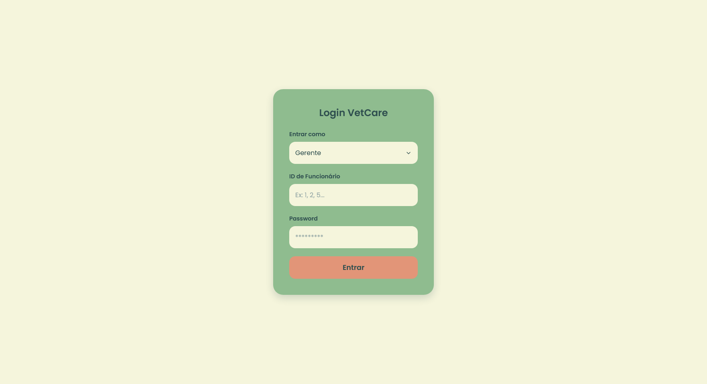
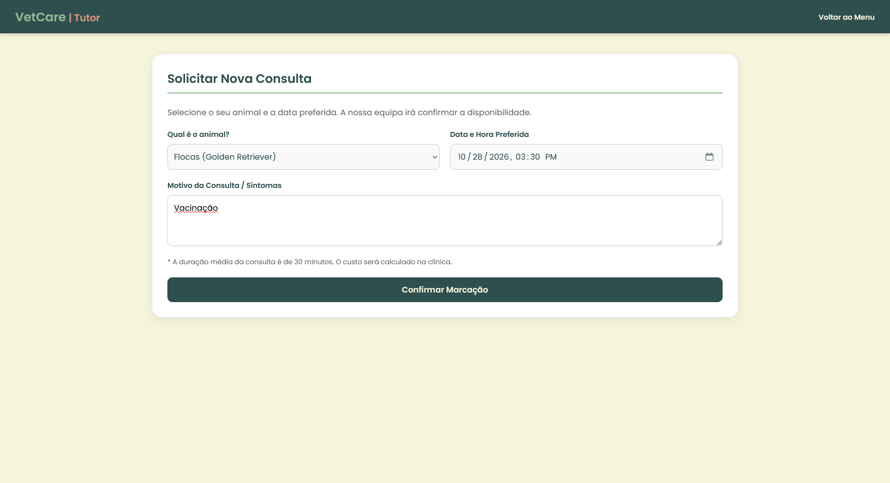
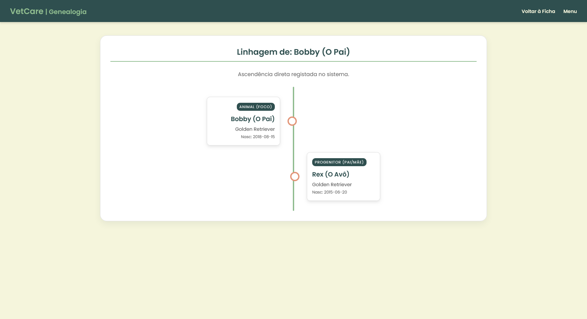
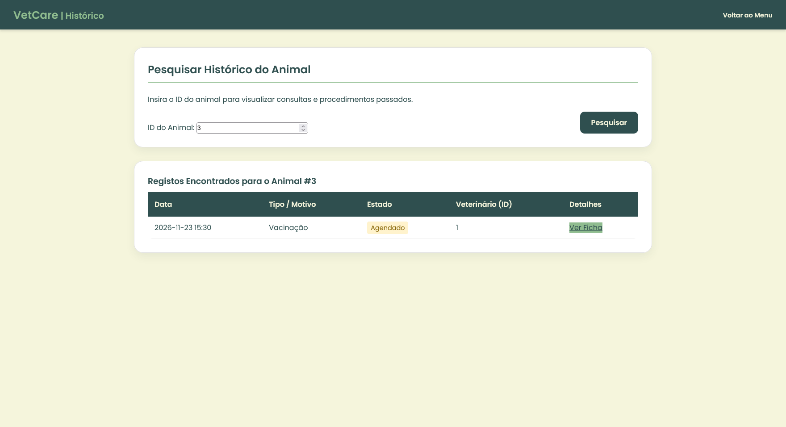
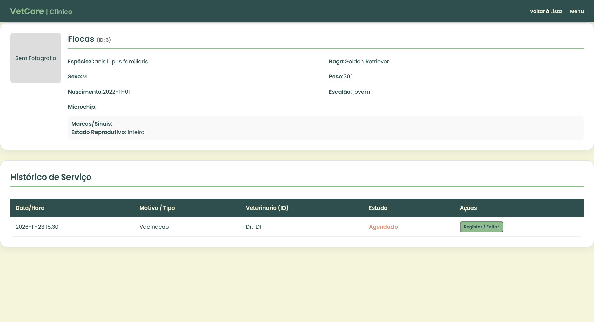
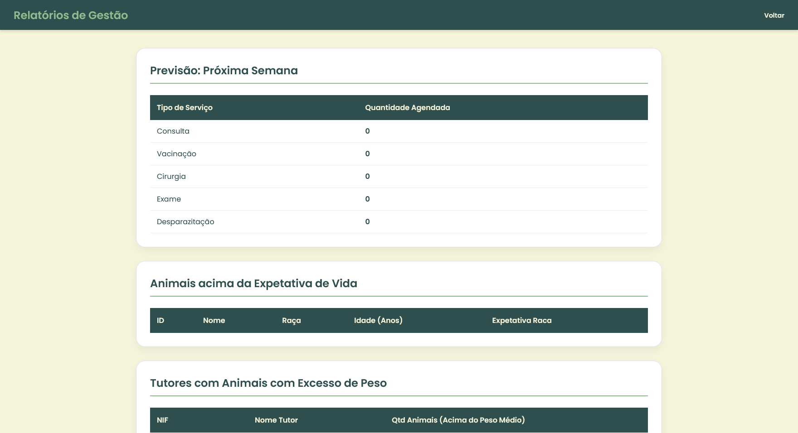

Veterinary Clinic Management
System for Managing a Veterinary Clinic
Web application for running a veterinary clinic, managing veterinarians, animals, clinical records, appointments and management reports, on a relational schema designed from the domain.
- 2025
- Developer
- Completed
About
This project starts from a problem every clinic has. Knowing who owns each animal, which breed it belongs to, which service was performed and by whom. Done on paper or in spreadsheets, those answers stop scaling as soon as the clinic needs to know what is scheduled for tomorrow or how much was cancelled last quarter.
The application gives each of the four roles its own area: receptionists register tutors and animals and book services, veterinarians follow the call list and write clinical records, tutors check their animals' history and manage their own appointments, and the manager handles staff records, statistics and XML import/export.
The Java code talks to MySQL over JDBC, with the SQL written by hand instead of through an ORM.
Features
- Role-based areas for tutor, receptionist, veterinarian and manager
- Registration of tutors, which can be individuals or companies and animals, with breed, colours and allergies
- Appointment booking with availability taken from the weekly shifts
- Clinical records with symptoms, diagnosis, prescriptions, vaccination and surgery data
- Call list of the day and the full clinical history of each animal
- Genealogical tree of an animal, walking up through its ancestors
- Weekly forecast, animals past their breed's life expectancy, overweight animals and top cancellations
- XML export and import of tutor and animal records
Database
22 tables and 4 views, modelled around the domain rather than around the screens.
- Tutors are specialised into individuals and companies, each with its own attributes
- Staff is specialised into veterinarians and receptionists
- Appointments are a service hierarchy, including consultations, vaccinations, surgeries, exams and deworming
- Animals link to breed and species, with colours and allergies in many-to-many tables
- Weekly shifts define per-veterinarian availability used when booking
- Clinical history is stored per service, keeping diagnosis and prescriptions
System Interface
From the login to the management reports. All data shown is fictitious.





